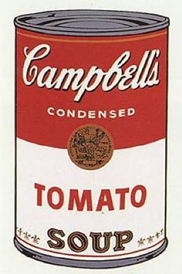

By the 1960s, the New York art world was in a rut, the very original and popular canvases of the Abstract Expressionists of the 1940s and '50s had become cliche. Warhol was one of the artists that felt the need to bring back imagery into his work. The gallery owner and interior designer Muriel Latow gave Warhol the idea of painting soup cans, when she suggested to him that he should paint objects that people use every day (it is rumored that Warhol ate the soup for lunch every single day). He painted Campbell's soup cans, Brillo boxes, and Coca-Cola bottles from 1962, onward.

After her sudden death from an overdose of sleeping pills in August 1962, superstar Marilyn Monroe's life, career, and tragedy became a worldwide obsession. Warhol, being infatuated with fame and pop culture, obtained a black-and-white publicity photo of her (from her 1953 film Niagara) and used the photo to create several series of images. A common idea to all the Marilyn works was that her image was reproduced over and over again as one would find it reprinted in newspapers and magazines at the time. After viewing dozens, or hundreds of such images, a viewer stops seeing a person depicted, but is left with an icon of popular, consumer culture. The image (and the person) become another cereal box on the supermarket shelf, one of hundreds of boxes - which are all exactly the same.

Warhol's self portraits that he created throughout his career reveal an underlying theme. It can be argued that Warhol's most successful artwork was the image of himself, invented and reinvented over his body of work. Simply consider the fact that Warhol started his art career as a nerdy, shy, balding designer and ended it as a star whose popularity could match his greatest depictions (Monroe, Elvis, Mao).

Visit: artsy.net to see and purchase Warhol originals!